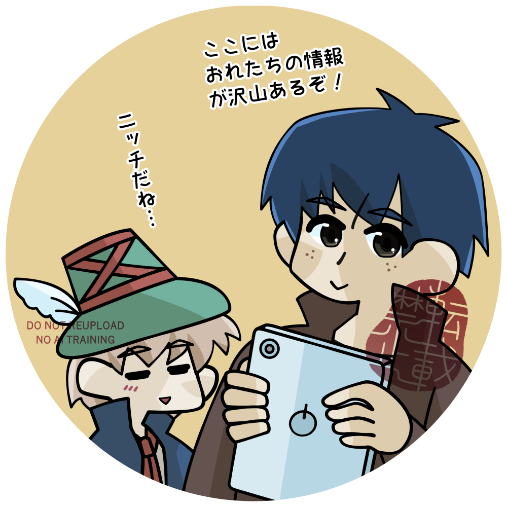

ここはなに
t0-maの作成した「家なき子（原作：エクトール・アンリ・マロ著、アニメ版：出﨑統監督）」の研究成果へのリンク集です。
お品書き
- レビューブログ
- 原作と出﨑版アニメに関する考察。
- 伺かゴースト「レミ一座」
- 作品に関するうんちくを話してくれます。イカガカ使用。
その他
- 管理者：t0-ma《とーま》
- 出﨑版放送当時生まれてない。名劇版から読んだ原作でハマり、出﨑版を観て沼へ。
→ スタンプを送る - ブックマーク
- COMPASS LINK

t0-maの作成した「家なき子（原作：エクトール・アンリ・マロ著、アニメ版：出﨑統監督）」の研究成果へのリンク集です。